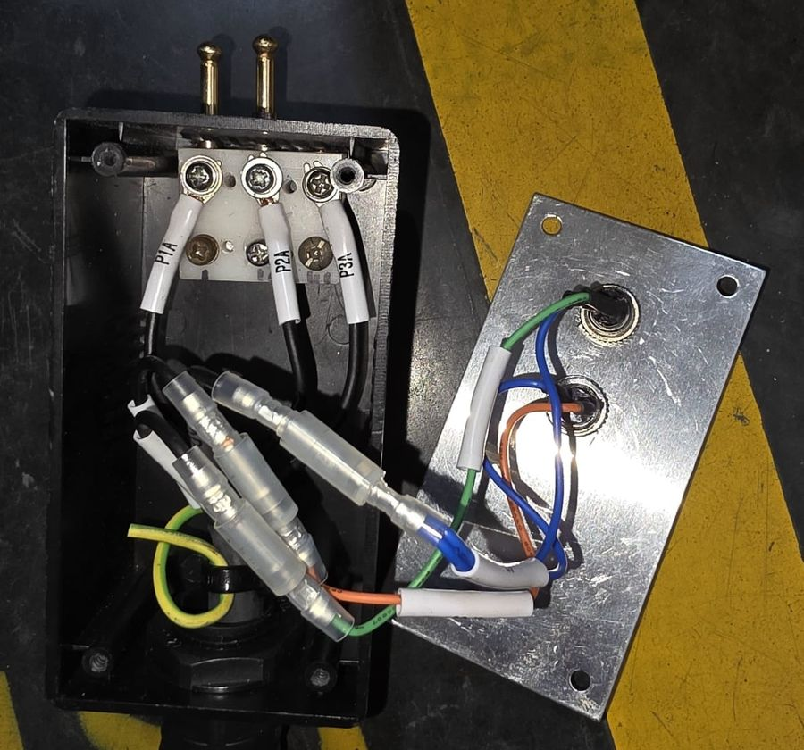
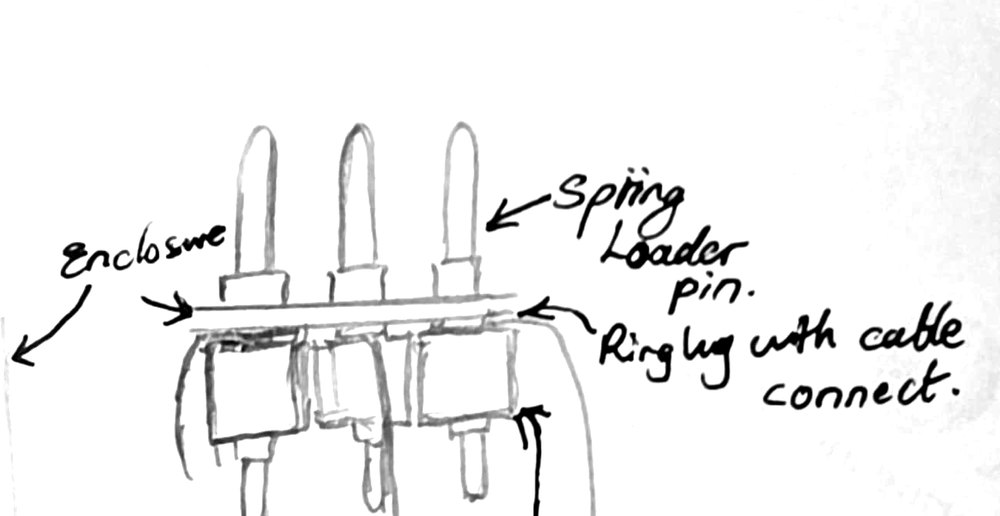
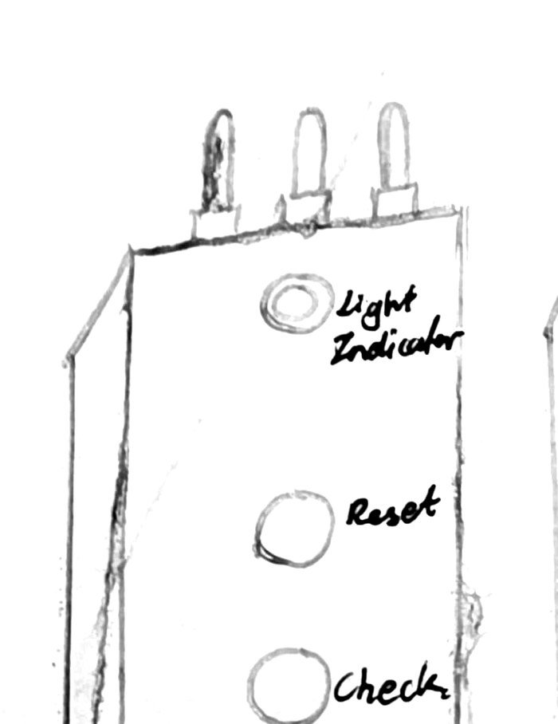

Apr 2026
Proposed redesign of a production-line continuity tester
The line's handheld continuity tester had contact pins that wobbled and sank during use. Operators had to stop and straighten them by hand, and good units sometimes failed. I proposed a structural redesign: a reinforced internal bracket, a plastic insulator to stop the pins sinking, spring-loaded pins on a ring lug connection, and an LED indicator on the handheld unit.
Today
7 minlost per shift
Projected, not yet measured
20 s → 15 saverage test time
about 85% → 99%first-pass accuracy
I presented the proposal to the floor team and team leaders, who backed it, and prepared a pitch to upper management for a Line 3 prototype.


